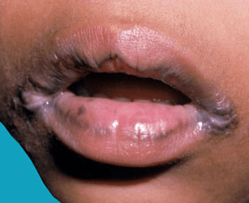
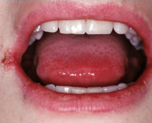

What is Angular Cheilitis?
Angular cheilitis (perlèche) is a chronic inflammatory condition of the
corners of the mouth. Usually associated with a fungal (Candidal) or bacterial
(Staphylococcal) infection, those affected may also have thrush (oral candidiasis).
The areas are generally slightly painful. The condition can last from days to
months, depending upon whether or not the affected person seeks treatment.

Angular cheilitis may affect people of all ages. Chronic pooling of saliva
encourages fungal and bacterial growth, and patients who are immunocompromised,
have undergone head and neck radiation, or have diabetes mellitus are also prone
to this condition.
Patients who are predisposed to this condition also may have problems with:
- Iron deficiency
- Vitamin B12 deficiency
- Folate deficiency
- Drooping of the corners of the mouth caused by dentures that do
not adequately support the facial musculature
Symptoms of angular cheilitis will almost exclusively appear at the corners of
the mouth. The symptoms can be both physically painful and cosmetically frustrating.
Symptoms can vary from having only mild redness to having open, bleeding blisters.
If you’re experiencing angular cheilitis, the corners of your mouth may be:
- bleeding
- red
- swollen
- cracked
- blistered
- crusty
- itchy
- scaly
- painful
Other symptoms include:
- bad taste in your mouth
- burning feeling on your lips or mouth
- lips feeling dry or chapped
- difficulty eating as a result of the irritation

There are several different causes of angular cheilitis. The most common is
yeast infection as a result of saliva.
Saliva can build up and get trapped in the corners of the lips, which causes
the lips to crack. A person may lick their lips more in an attempt to soothe
the pain or dryness of their lips. This excess saliva will sit in the corners
of the lips, which is the perfect warm environment for fungus like yeast to grow.
Viruses and bacteria can also cause it to develop.
Certain people are more at risk for developing angular cheilitis. At-risk groups
include those who:
- have an overhang of the upper lip, creating deeper angles at the corners of the lips
- have regular oral thrush
- frequently use corticosteroids or antibiotics
- have sensitive skin
- have other inflammatory illnesses, like Crohn’s disease
- use oral retinoid medication
- wear braces
- smoke
- have anemia, diabetes, or cancer
Because angular cheilitis can be the sign of a fungal or bacterial infection,
you should consult your doctor to determine how to treat it. Your primary
physician can diagnose angular cheilitis, but dermatologists may be able
to provide the best treatment.
Your doctor will examine the skin, and ask about any other skin irritations
elsewhere on your body. They’ll likely ask you about your personal and family
history of oral thrush and yeast infections. They’ll also ask what other
conditions you have, and what medications you’re taking.
Your doctor will likely take culture swabs from the corners of the mouth,
which they’ll send to a lab to test. This will help them definitively diagnose a cause.
While many cases of angular cheilitis are relatively easy to treat, once your doctor
identifies the underlying cause you do want to treat it.
If it’s the result of a bacterial or fungal infection — which most are — the
infection could spread to adjacent skin. It could also lead to oral thrush.
Dentures may act as reservoirs of infection. To prevent angular cheilitis, try soaking
dentures overnight in a solution made up of 10 parts water to 1 part household bleach.
For metal dentures that may become discolored by bleach, the use of a sodium benzoate
or chlorhexidine mouth rinse is a good option.
If persistent lip irritation, painful cracking, or fissuring at the corners of the
mouth is present, seek evaluation from your primary care provider or dermatologist.
The underlying cause of the angular cheilitis will determine treatment. If your
doctor suspects a nutritional deficiency, they will likely recommend making dietary
or supplement recommendations.
If yeast is present, your doctor will likely prescribe a topical antifungal. Topical
antibiotics will be used if a bacterial infection is responsible.
Other treatment options include:
- topical antiseptics to keep open wounds clean
- topical steroid ointment
- filler injections to reduce the creases at the corners of the mouth
You can also use home treatments to treat your angular cheilitis, including:
- using lip balm regularly to prevent chapped lips
- applying petroleum jelly to the corners of the mouth
- applying coconut oil to the corners of the mouth, which can help dry skin
Once your doctor is able to determine the underlying cause of angular cheilitis,
it typically responds well to treatment. Many cases won’t even require treatment
of any sort outside of applying lip balm to the lips or petroleum jelly to the corners
of the mouth on a more regular basis. If you’ve tried home treatment and your symptoms
haven’t resolved after two weeks, make an appointment to see your doctor.